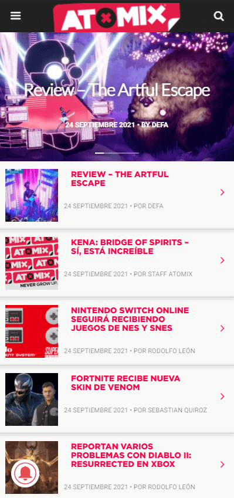

Desing Principles Document
David Burguete
Repetition
Atomix
atomix.vg The Atomix site uses the design principle of repetition, using the same style for each of the topics or news items presented on the site. This facilitates the way in which one can see the relevant news and understand them better and makes it more appealing for the user to navigate through the site.
Contrast
Apple
apple.comOn apple's website you can see the use of contrast between its colors, the image and the color of the text. Making the page more striking and attractive to the user. It does not use too much text so it has a simpler and cleaner design.
Proximity
Steam
store.steampowered.comThe steam page uses the design of the principle of proximity, this is achieved by putting the image and the price of each of the games, helping the user to understand perfectly the price of each of the products, if there is any offer or any information related to that product.